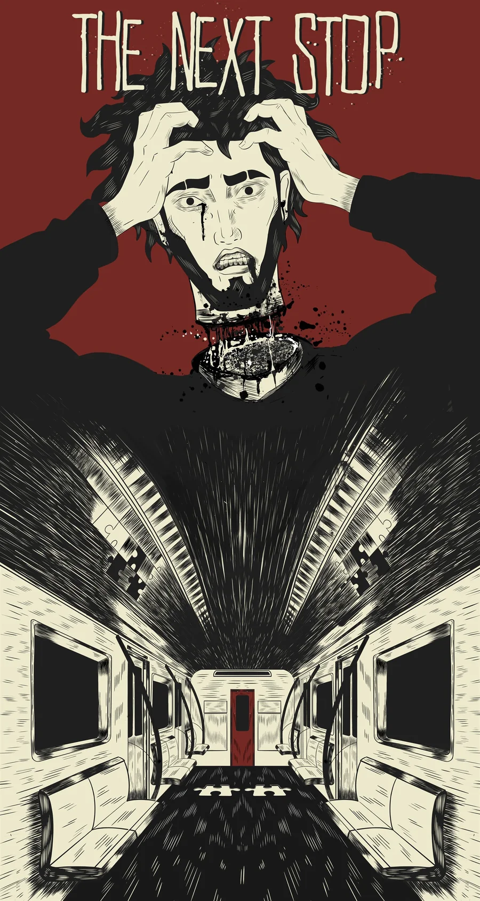
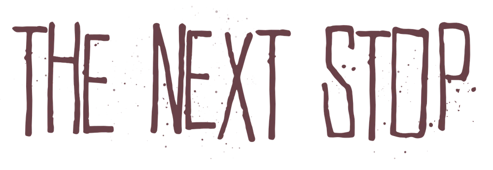
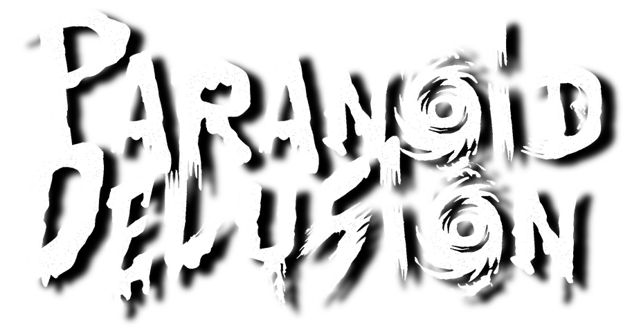
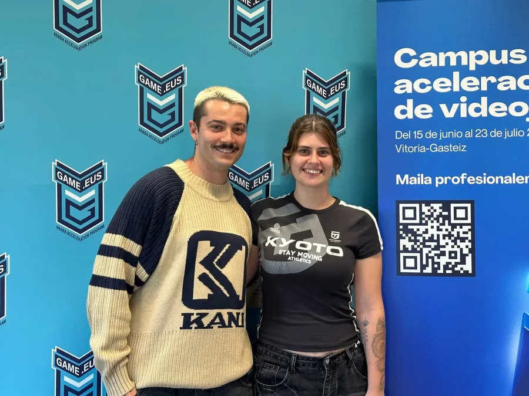
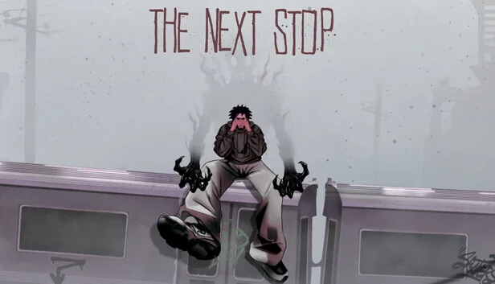
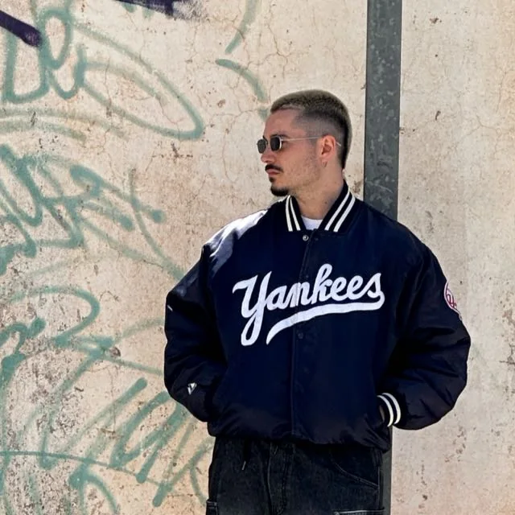
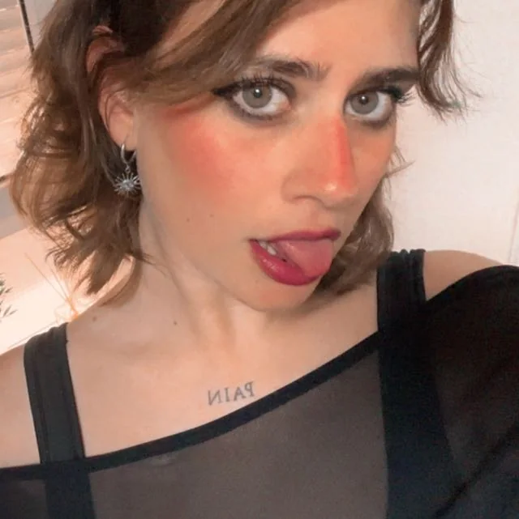

SAGA 2026
Nos vemos en Barcelona.
Estaremos en SAGA, en Fira Barcelona Montjuïc, los días 9, 10 y 11 de octubre. Ven a conocer The Next Stop y al equipo de Paranoid-Delusion.

UN JUEGO DE
Una aventura de misterio psicológico
A Psychological Mystery Game · Point & Click
Explora, observa cada detalle y deja que la historia te lleve a la próxima parada.
Continúa el recorrido02 / Primera mirada
Entra en el mundo de The Next Stop con su tráiler oficial.
03 / El proyecto en marcha
Encuentros, ferias y momentos que forman parte del desarrollo de The Next Stop.

SAGA 2026
Estaremos en SAGA, en Fira Barcelona Montjuïc, los días 9, 10 y 11 de octubre. Ven a conocer The Next Stop y al equipo de Paranoid-Delusion.

Game.eus
Participamos en la incubadora vasca Game.eus, en Gasteiz: seis semanas de trabajo y aprendizaje para seguir dando forma al proyecto.

Gamescom
Llevamos The Next Stop a Gamescom y compartimos el proyecto con nuevos jugadores.
04 / Detrás del juego
El equipo detrás de The Next Stop. Diseño, narrativa, arte y programación se encuentran para dar forma a esta aventura de misterio psicológico.

Diseño y guion

Arte
Programación
Escríbenos para hablar de The Next Stop.
Sigue las próximas novedades del juego.
The Next Stop en Steam